Detail Page
Product Detail Page
↗상품의 매력을 전달하는 상세페이지
상품의 매력을 전달하는 상세페이지
웹사이트 및 UI 리디자인
프로모션 배너 디자인
제품 촬영과 이미지 보정
영상 콘텐츠 기획 · 촬영 · 편집
브랜드 비주얼 콘셉트
화장품 상세페이지 프로젝트
앱 UI 디자인 프로젝트
상세페이지 · 배너

생성형 AI를 활용해 가상의 모공 케어 앰플 제품과 연출 이미지를 제작하고, 이를 바탕으로 상세페이지 및 광고 배너를 디자인한 개인 프로젝트입니다. 상세페이지에서는 소비자의 피부 고민부터 제품의 핵심 특징, 성분, 사용감까지 자연스럽게 전달할 수 있도록 정보를 구성했습니다. 광고 배너에서는 제품의 핵심 메시지와 프로모션을 강조하고, 동일한 컬러와 비주얼 콘셉트를 적용하여 일관된 브랜드 이미지를 표현했습니다.
제품의 다양한 특징과 성분 정보를 효과적으로 전달하면서, 광고 배너에서는 짧은 시간 안에 소비자의 관심을 유도해야 함
상세페이지를 통해 제품의 이해도를 높이고, 광고 배너를 통해 핵심 장점과 프로모션 메시지를 직관적으로 전달
상세페이지는 피부 고민부터 제품 솔루션, 성분, 사용 방법까지 단계적으로 구성하고, 배너는 제품 비주얼과 핵심 카피를 중심으로 간결하게 디자인
모공과 피부결 관리에 관심이 있으며, 제품의 성분과 사용감을 꼼꼼히 비교하는 20~30대 소비자
“매일 더 촘촘하게, 3중 모공 케어” 피지·탄력·피부결 케어를 중심으로 제품의 특징을 강조하고, 배너에서는 신제품 출시와 프로모션 메시지를 전달
Warm · Natural · Premium
브라운과 베이지 컬러를 활용한 따뜻하고 고급스러운 스킨케어 브랜드 이미지
상세페이지는 피부 고민부터 제품 특징과 사용 방법까지 자연스럽게 이어지는 세로형 정보 구조로 구성하고, 배너는 제품 이미지와 핵심 메시지에 시선이 집중되도록 배치
제품과 유사한 브라운 컬러를 활용하여 일관된 디자인 구성. 가독성이 높은 Pretendard 서체를 사용하고, 글자 크기와 굵기에 차이를 두어 핵심 정보 강조.
생성형 AI로 제작한 제품 및 연출 이미지를 Photoshop으로 보정·합성하고, 상세페이지에는 성분 아이콘과 인포그래픽을, 배너에는 제품 중심의 비주얼을 활용
생성형 AI를 활용한 제품 이미지 제작부터 상세페이지와 광고 배너 디자인까지 진행하며 하나의 제품을 다양한 디지털 콘텐츠로 확장했습니다. 상세페이지에서는 소비자의 피부 고민부터 제품의 특징과 성분까지 자연스럽게 이어지도록 정보를 구성하고, 광고 배너에서는 제품 비주얼과 핵심 메시지를 강조했습니다. 이번 프로젝트를 통해 콘텐츠의 목적에 따라 정보의 배치와 표현 방식을 달리하면서도, 컬러와 타이포그래피의 일관성을 유지하는 것이 중요하다는 점을 배웠습니다.
상세페이지
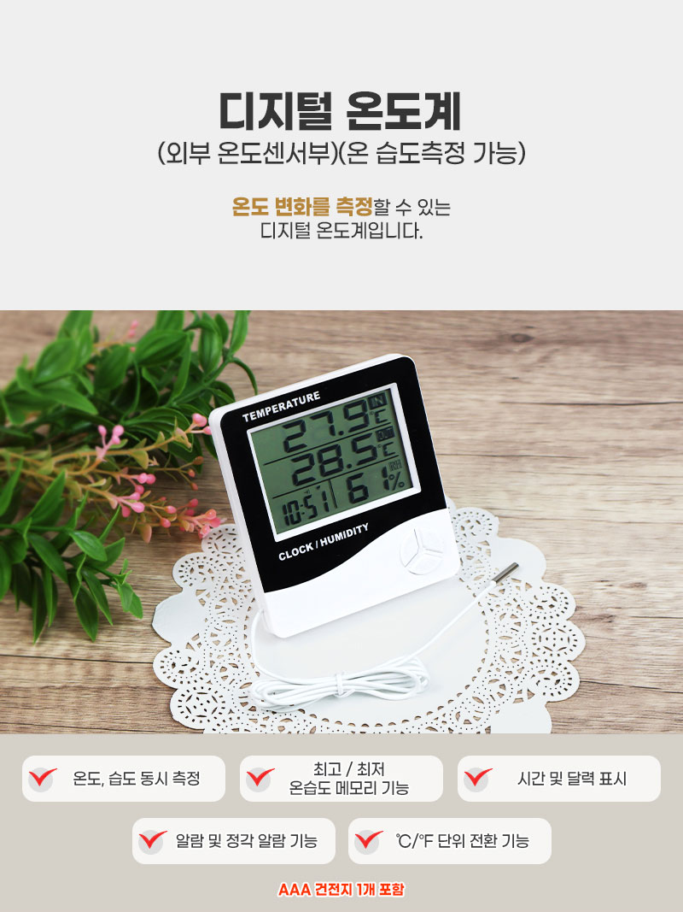
디지털 온도계의 주요 기능과 사용 방법을 소비자가 쉽게 이해할 수 있도록 제작한 인하우스 상세페이지 프로젝트입니다. 제품을 직접 촬영하고, 기존 영문 설명서를 번역하여 주요 기능과 조작 방법을 정리했습니다. 이를 바탕으로 제품 이미지와 설명을 적절히 배치하여 정보 전달에 중점을 둔 상세페이지를 제작했습니다.
기존 영문 설명서의 기능 및 조작 방법을 소비자가 쉽게 이해하기 어려우며, 제품의 다양한 기능을 한눈에 파악하기 어려움
제품의 주요 기능과 사용 방법을 직관적으로 전달하여 소비자가 제품을 쉽게 이해하고 활용할 수 있도록 구성
영문 설명서를 번역하고 핵심 정보를 정리한 뒤, 제품 사진과 기능별 설명을 연결하여 단계적으로 정보를 전달
실내 온습도 관리가 필요하며, 제품의 기능과 조작 방법을 쉽게 확인하고 싶은 소비자
“온도와 습도를 한눈에, 간편한 실내 환경 관리” 온습도 확인부터 최고·최저 수치 기록, 알람 설정까지 주요 기능을 쉽게 전달
Simple · Clean · Informative
제품의 기능과 사용 방법이 명확하게 전달되도록 간결하고 실용적인 디자인 구성
제품 소개 → 주요 기능 → 버튼 조작 → 세부 기능 → 사용 방법 → 제품 사양 순으로 정보를 배치하여 단계적인 이해를 돕는 구성
밝은 그레이와 화이트를 중심으로 깔끔한 배경 구성. 민트와 블루 계열의 포인트 컬러를 활용해 기능별 정보를 구분하고, 글자 크기와 굵기에 차이를 두어 핵심 내용 강조
제품을 직접 촬영하고 Photoshop을 활용해 이미지 보정 및 편집 진행. 버튼 위치와 주요 기능을 화살표, 확대 이미지, 설명 문구로 시각화하여 이해도 향상
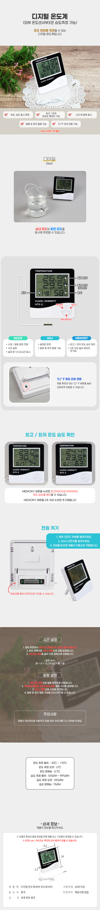
제품을 직접 촬영하고 기존 영문 설명서를 번역하는 과정에서 제품의 주요 기능과 사용 방법을 파악했습니다. 이후 소비자가 이해하기 쉽도록 설명을 정리하고, 제품 사진과 시각적 요소를 활용해 상세페이지를 구성했습니다. 특히 버튼 조작 방법과 세부 기능을 이미지와 함께 설명하여 복잡한 정보를 직관적으로 전달하고자 했습니다. 이번 작업을 통해 제품의 기능을 정확히 이해하고, 소비자의 입장에서 필요한 정보를 효과적으로 구성하는 것이 중요하다는 점을 경험했습니다.
자사몰 운영 안내 · 팝업 디자인
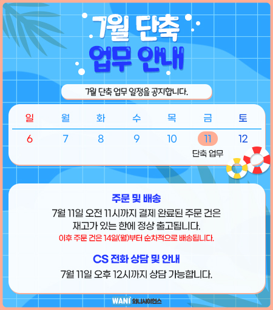
7월 단축 업무 일정에 따른 주문 및 배송, 고객 상담 운영 시간을 안내하기 위해 제작한 자사몰 공지 팝업입니다. 고객이 변경된 일정을 쉽게 확인할 수 있도록 달력과 안내 문구를 중심으로 정보를 구성했습니다
달력을 중심으로 단축 업무일을 시각적으로 강조, 하단에 주문·배송 및 고객 상담 안내를 구분하여 배치
시원한 블루 계열의 컬러와 여름 분위기의 그래픽을 활용, 제목과 주요 일정에 대비를 주어 가독성을 높임
수영 튜브와 야자수 등 계절감을 나타내는 일러스트를 활용하여 여름 분위기를 표현, 날짜별 정보를 직관적으로 확인할 수 있도록 디자인
제품 촬영과 이미지 보정
이 영역에 프로젝트의 기획 의도와 작업 과정을 입력하세요.
이 프로젝트를 어떤 목적으로 진행했는지 2~3문장으로 소개하세요.
이 디자인을 제작한 이유와 해결하고자 했던 문제를 적어주세요. 예: 핵심 정보를 한눈에 파악할 수 있도록 콘텐츠 구조를 개선했습니다.
기존 콘텐츠의 문제점 또는 제작 배경
프로젝트를 통해 달성하고자 한 목표
목표를 실현하기 위해 선택한 디자인 방향
주요 사용자·고객층과 니즈
사용자에게 가장 먼저 전달할 메시지
전체적인 분위기와 비주얼 콘셉트
단순히 예쁘게 만든 것이 아니라, 어떤 의도를 디자인에 반영했는지 설명하세요.
정보의 우선순위와 시선 흐름을 고려한 배치
컬러·타이포그래피 선택 이유
사진·그래픽·아이콘 등 표현 방식
여기에 완성한 상세페이지·웹 화면·배너 등 실제 작업 이미지를 넣어주세요.
완성 결과와 개선한 점, 배운 점을 적어주세요. 실제 성과 수치가 없다면 억지로 만들 필요는 없습니다.
영상 콘텐츠 기획 · 촬영 · 편집
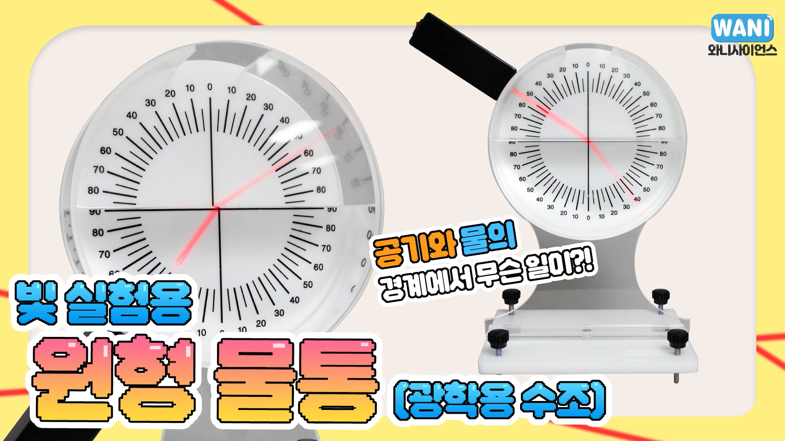
빛의 성질을 쉽고 흥미롭게 이해할 수 있도록 제작한 교육 영상입니다.
공기와 물의 경계에서 빛이 나아가는 모습을 관찰할 수 있으며, 영상을 따라 하면서 실험 도구의 사용법을 익히고
직접 실험을 진행할 수 있도록 제작하였습니다.
실험 도구의 사용법과 빛의 진행 과정을 글과 이미지만으로 이해하기 어려움
빛의 성질을 쉽게 이해하고 직접 실험할 수 있도록 안내
질문과 간단한 애니메이션을 활용해 시청자의 호기심을 유도하고, 자연스럽게 실험 과정에 집중하도록 구성
과학 실험에 관심 있는 학생 및 교육자
직접 관찰하고 따라 하며 이해하는 빛의 성질
실험 과정과 관찰 결과를 중심으로 한 직관적인 교육 영상
실험 순서에 따라 자연스럽게 이어지는 화면 구성
실험 장면을 방해하지 않는 간결한 자막과 그래픽
빛의 진행 방향과 실험 결과가 잘 드러나는 다양한 촬영 구도
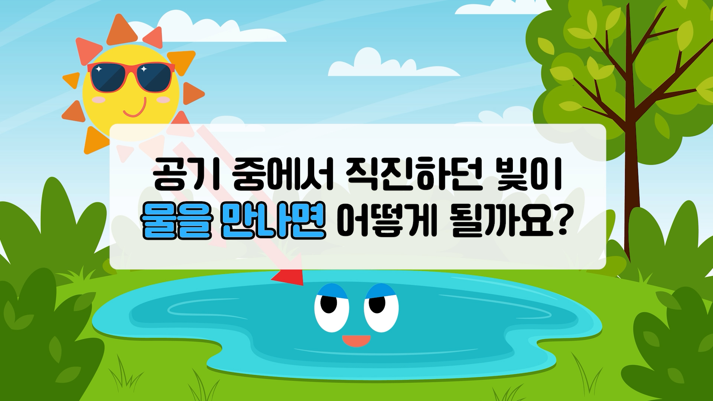
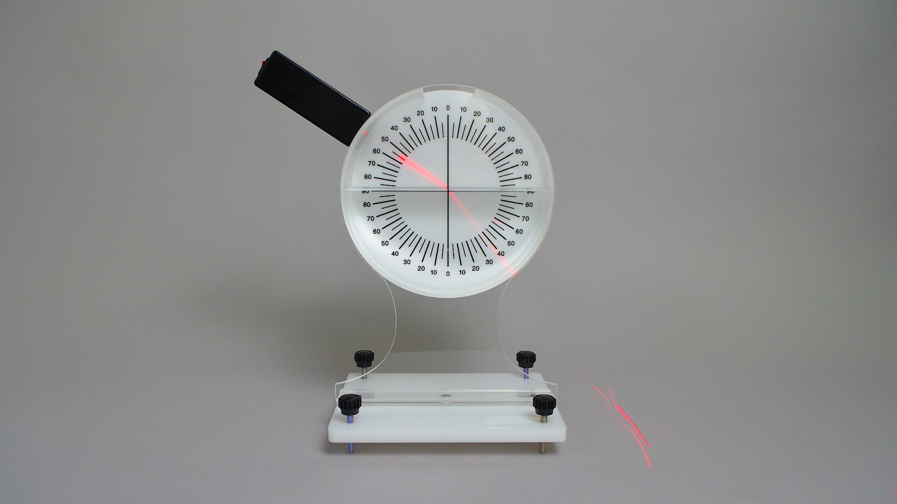
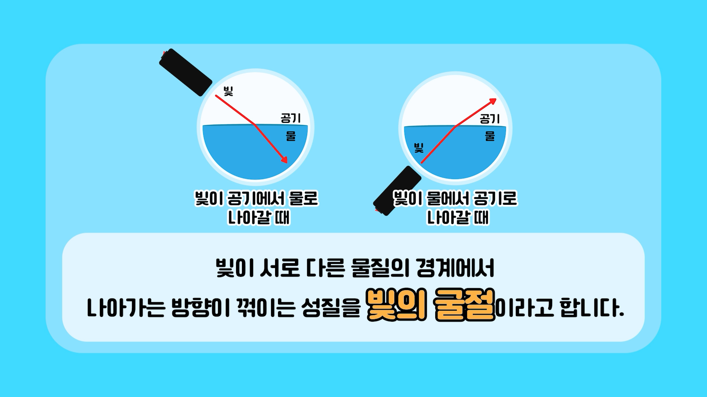
레이저 빛의 굴절 현상을 선명하게 촬영하는 데 어려움이 있었지만, 이를 효과적으로 보여주기 위해 촬영 구도와 표현 방식을 고민했습니다. 또한 시청자가 실험 과정을 쉽게 이해하고 따라 할 수 있도록 영상의 전개 순서와 편집 구성에 신경 썼습니다. 이번 작업을 통해 교육 영상에서는 시각적 전달력뿐 아니라 정보의 흐름과 이해하기 쉬운 구성이 중요하다는 점을 배웠습니다.
브랜드 비주얼 콘셉트
이 영역에 프로젝트의 기획 의도와 작업 과정을 입력하세요.
이 프로젝트를 어떤 목적으로 진행했는지 2~3문장으로 소개하세요.
이 디자인을 제작한 이유와 해결하고자 했던 문제를 적어주세요. 예: 핵심 정보를 한눈에 파악할 수 있도록 콘텐츠 구조를 개선했습니다.
기존 콘텐츠의 문제점 또는 제작 배경
프로젝트를 통해 달성하고자 한 목표
목표를 실현하기 위해 선택한 디자인 방향
주요 사용자·고객층과 니즈
사용자에게 가장 먼저 전달할 메시지
전체적인 분위기와 비주얼 콘셉트
단순히 예쁘게 만든 것이 아니라, 어떤 의도를 디자인에 반영했는지 설명하세요.
정보의 우선순위와 시선 흐름을 고려한 배치
컬러·타이포그래피 선택 이유
사진·그래픽·아이콘 등 표현 방식
여기에 완성한 상세페이지·웹 화면·배너 등 실제 작업 이미지를 넣어주세요.
완성 결과와 개선한 점, 배운 점을 적어주세요. 실제 성과 수치가 없다면 억지로 만들 필요는 없습니다.
화장품 상세페이지 프로젝트
이 영역에 프로젝트의 기획 의도와 작업 과정을 입력하세요.
이 프로젝트를 어떤 목적으로 진행했는지 2~3문장으로 소개하세요.
이 디자인을 제작한 이유와 해결하고자 했던 문제를 적어주세요. 예: 핵심 정보를 한눈에 파악할 수 있도록 콘텐츠 구조를 개선했습니다.
기존 콘텐츠의 문제점 또는 제작 배경
프로젝트를 통해 달성하고자 한 목표
목표를 실현하기 위해 선택한 디자인 방향
주요 사용자·고객층과 니즈
사용자에게 가장 먼저 전달할 메시지
전체적인 분위기와 비주얼 콘셉트
단순히 예쁘게 만든 것이 아니라, 어떤 의도를 디자인에 반영했는지 설명하세요.
정보의 우선순위와 시선 흐름을 고려한 배치
컬러·타이포그래피 선택 이유
사진·그래픽·아이콘 등 표현 방식
여기에 완성한 상세페이지·웹 화면·배너 등 실제 작업 이미지를 넣어주세요.
완성 결과와 개선한 점, 배운 점을 적어주세요. 실제 성과 수치가 없다면 억지로 만들 필요는 없습니다.
앱 UI 디자인 프로젝트
이 영역에 프로젝트의 기획 의도와 작업 과정을 입력하세요.
이 프로젝트를 어떤 목적으로 진행했는지 2~3문장으로 소개하세요.
이 디자인을 제작한 이유와 해결하고자 했던 문제를 적어주세요. 예: 핵심 정보를 한눈에 파악할 수 있도록 콘텐츠 구조를 개선했습니다.
기존 콘텐츠의 문제점 또는 제작 배경
프로젝트를 통해 달성하고자 한 목표
목표를 실현하기 위해 선택한 디자인 방향
주요 사용자·고객층과 니즈
사용자에게 가장 먼저 전달할 메시지
전체적인 분위기와 비주얼 콘셉트
단순히 예쁘게 만든 것이 아니라, 어떤 의도를 디자인에 반영했는지 설명하세요.
정보의 우선순위와 시선 흐름을 고려한 배치
컬러·타이포그래피 선택 이유
사진·그래픽·아이콘 등 표현 방식
여기에 완성한 상세페이지·웹 화면·배너 등 실제 작업 이미지를 넣어주세요.
완성 결과와 개선한 점, 배운 점을 적어주세요. 실제 성과 수치가 없다면 억지로 만들 필요는 없습니다.
영상 콘텐츠 기획 · 촬영 · 편집
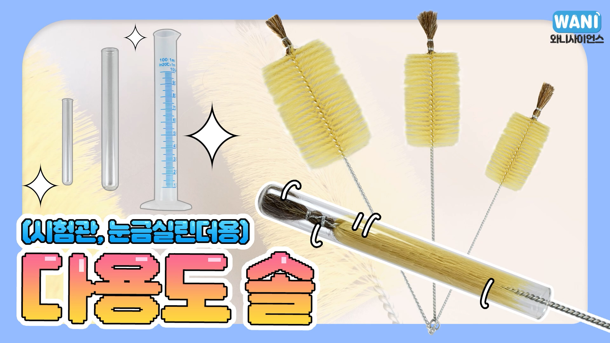
‘실험의 시작은 깨끗한 시험관과 눈금실린더로부터’라는 주제로 제작한 제품 소개 영상입니다. 입구가 좁아 세척이 어려운 시험관과 눈금실린더의 특성을 고려하여, 다양한 크기의 실험 도구를 세척할 수 있는 다용도 솔의 활용성과 장점을 전달하고자 했습니다. 특히 풍성한 솔과 다양한 크기 구성을 강조하여 실험 후에도 도구를 깨끗하게 관리할 수 있다는 점을 보여주었습니다.
입구가 좁고 크기가 다양한 시험관과 눈금실린더는 세척하기 어려움
다양한 실험 도구를 깨끗하게 세척할 수 있는 다용도 솔의 활용성과 장점 전달
실제 시험관 세척 장면을 중심으로 제품의 사용법을 보여주고, 다양한 크기의 솔이 가진 활용성과 세척 편의성을 시각적으로 강조
과학 실험 도구를 사용하는 학생 및 교육자
다양한 크기의 실험 도구를 깨끗하고 편리하게 세척할 수 있는 다용도 솔
실제 세척 장면과 제품의 특징을 중심으로 한 직관적이고 실용적인 제품 소개 영상
제품 소개부터 실제 세척 시연까지 자연스럽게 이어지는 영상 구성
제품과 세척 과정에 집중할 수 있도록 간결한 자막과 그래픽 활용
제 시험관 세척 장면을 통해 솔의 풍성함과 다양한 크기별 활용성을 시각적으로 강조
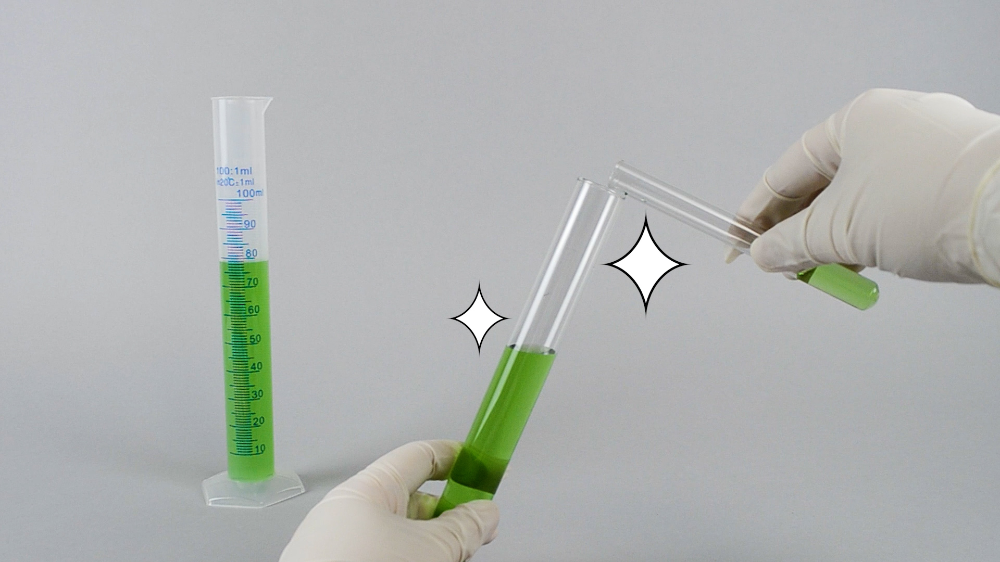
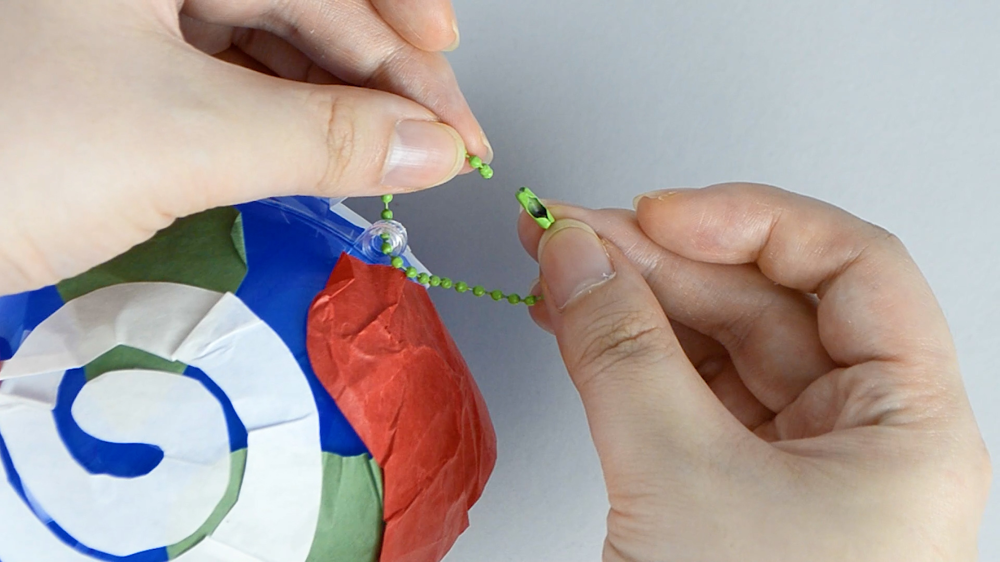
다양한 크기의 시험관과 눈금실린더를 직접 세척하는 장면을 촬영하여 다용도 솔의 활용성과 편의성을 시각적으로 전달하고자 했습니다. 풍성한 솔 모양과 다양한 크기 구성을 효과적으로 보여주는 데 중점을 두었습니다. 이를 위해 크기가 다른 시험관을 직접 준비하고, 각각의 시험관을 세척하는 장면을 촬영하여 제품의 활용성을 시각적으로 강조했습니다. 이번 작업을 통해 제품의 장점을 효과적으로 전달하기 위해서는 단순한 설명보다 특징이 잘 드러나는 촬영 대상과 시연 장면을 구성하는 것이 중요하다는 점을 배웠습니다.
영상 콘텐츠 기획 · 촬영 · 편집
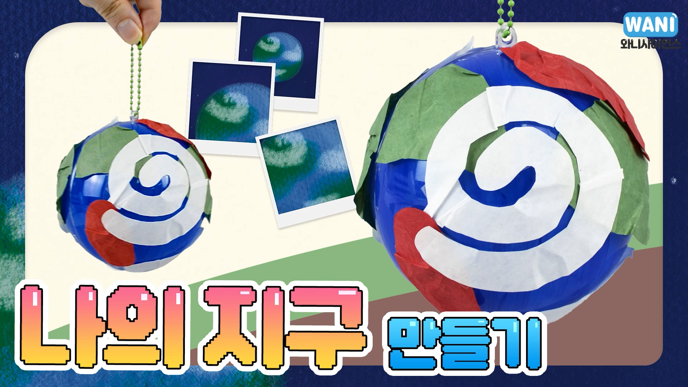
우주인이 촬영한 지구 사진을 바탕으로 나만의 지구를 만들어보는 과학 체험 교육 영상입니다. 직접 제작한 일러스트를 활용해 우주인이 지구를 촬영하는 이야기를 도입부에 구성하여 시청자의 흥미를 유도했습니다. 이후 플라스틱 반구 안쪽에 물감으로 색칠하고 겉면에 한지를 붙여 지구 모형을 완성하는 과정을 소개하며, 만들기 활동을 통해 지구의 특징을 자연스럽게 이해할 수 있도록 기획했습니다.
지구의 특징을 설명만으로 학습할 경우 흥미와 참여를 유도하기 어려움
직접 지구 모형을 제작하는 활동을 통해 지구의 특징을 쉽고 재미있게 이해하도록 유도
직접 그린 일러스트를 활용한 우주인 스토리로 호기심을 유발하고, 단계별 만들기 과정을 통해 자연스럽게 체험 활동으로 연결
지구와 우주에 관심 있는 학생 및 교육자
나만의 지구를 직접 만들고 소개하며 지구의 특징을 재미있게 알아보는 체험 활동
우주인의 지구 탐험 이야기를 담은 일러스트와 실제 만들기 과정을 결합한 친근하고 흥미로운 교육 영상
우주인의 지구 촬영 이야기에서 시작해 재료 소개, 지구 모형 제작, 완성 작품 소개로 자연스럽게 이어지는 영상 구성
지구의 다양한 색감을 활용한 만들기 장면과 직접 제작한 일러스트를 통해 친근하고 생동감 있는 분위기 연출
우주인이 지구를 촬영하는 일러스트 장면과 플라스틱 반구에 색칠하고 한지를 붙이는 실제 제작 과정을 시각적으로 연결
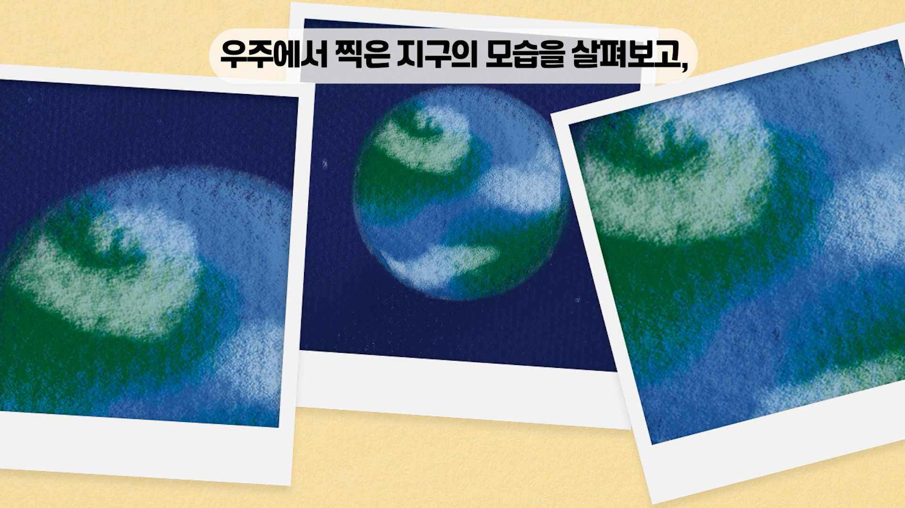
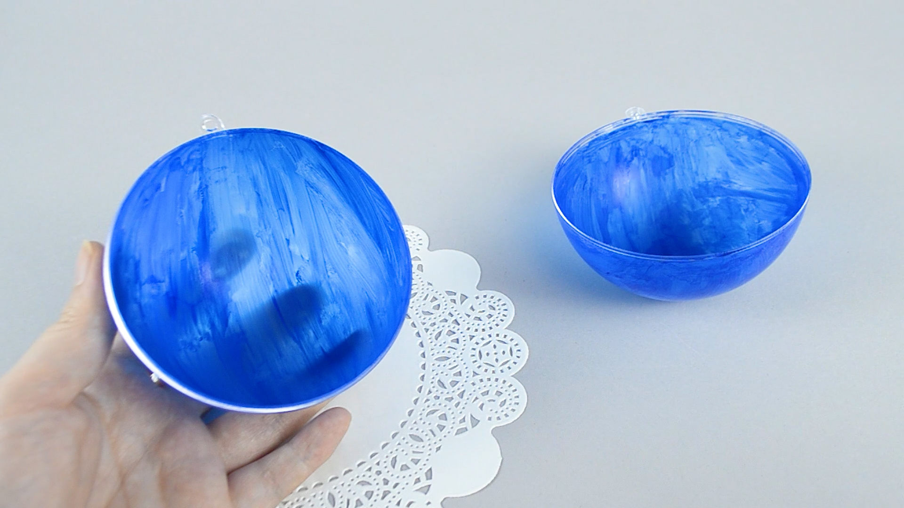
직접 그린 일러스트를 활용해 우주인이 지구를 촬영하는 이야기를 구성하고, 이를 실제 지구 모형 만들기 활동과 연결하여 영상의 흥미를 높이고자 했습니다. 특히 시청자가 제작 과정을 쉽게 따라 할 수 있도록 색칠과 한지 부착 과정을 단계별로 보여주는 데 중점을 두었습니다. 이번 작업을 통해 교육 영상에서는 단순한 제작 과정의 전달뿐 아니라, 스토리텔링과 시각적 연출을 활용해 학습에 대한 흥미를 유도하는 것이 중요하다는 점을 배웠습니다.
영상 콘텐츠 기획 · 촬영 · 편집
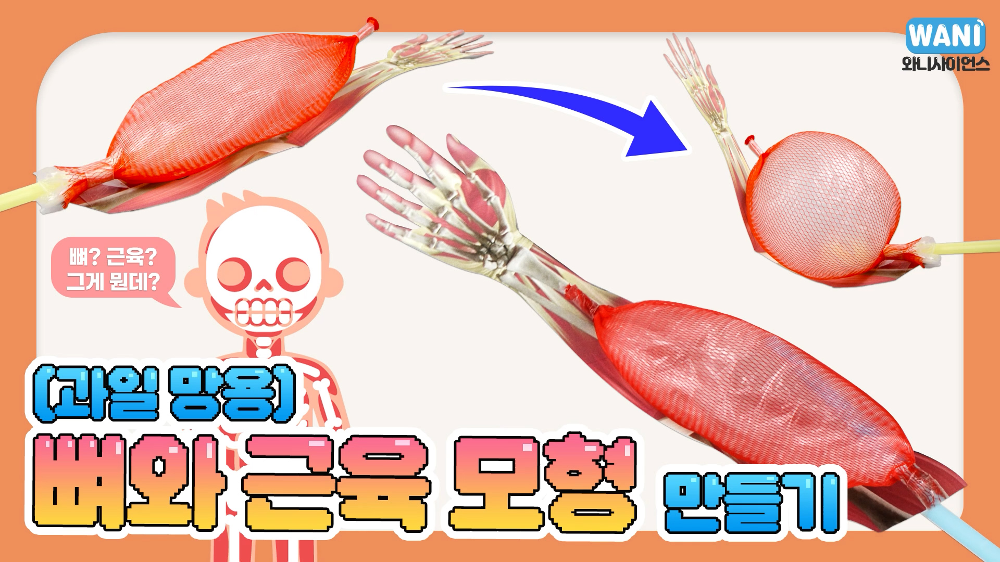
우리 몸의 뼈와 근육이 움직이는 원리를 쉽고 흥미롭게 이해할 수 있도록 제작한 과학 교육 영상입니다. 태권도 동작을 하는 아이들의 일러스트와 질문을 활용해 시청자의 호기심을 유도하고, 비닐봉지에 공기를 넣고 빼는 방식의 뼈와 근육 모형 제작 과정을 소개했습니다. 이후 모형의 움직임을 실제 신체 구조와 연결하여 뼈와 근육의 역할을 자연스럽게 이해할 수 있도록 구성했습니다.
뼈와 근육의 움직임을 설명만으로 이해하기 어려워 직관적인 학습이 필요함
모형 제작과 움직임 관찰을 통해 뼈와 근육의 역할 및 움직임의 원리를 쉽게 이해하도록 유도
태권도 동작을 활용한 질문으로 호기심을 유발하고, 모형 제작과 실제 움직임 시연을 통해 과학 원리를 단계적으로 전달
인체의 구조와 움직임에 관심 있는 학생 및 교육자
직접 모형을 만들고 움직임을 관찰하며 뼈와 근육이 함께 작용하는 원리 이해
친근한 일러스트와 실제 모형 제작 및 작동 장면을 결합한 직관적인 과학 체험 교육 영상
태권도 동작을 활용한 질문에서 시작해 모형 제작, 움직임 관찰, 뼈와 근육의 원리 설명으로 이어지는 단계별 영상 구성
친근한 일러스트와 간결한 설명을 활용하여 어린이도 쉽게 이해할 수 있는 교육 콘텐츠 분위기 연출
비닐봉지의 공기 주입과 배출에 따른 팔 모형의 움직임을 보여주고, 일러스트를 활용해 실제 뼈와 근육의 구조를 시각적으로 설명
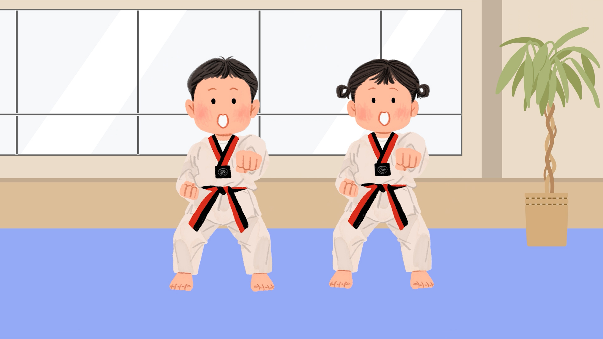
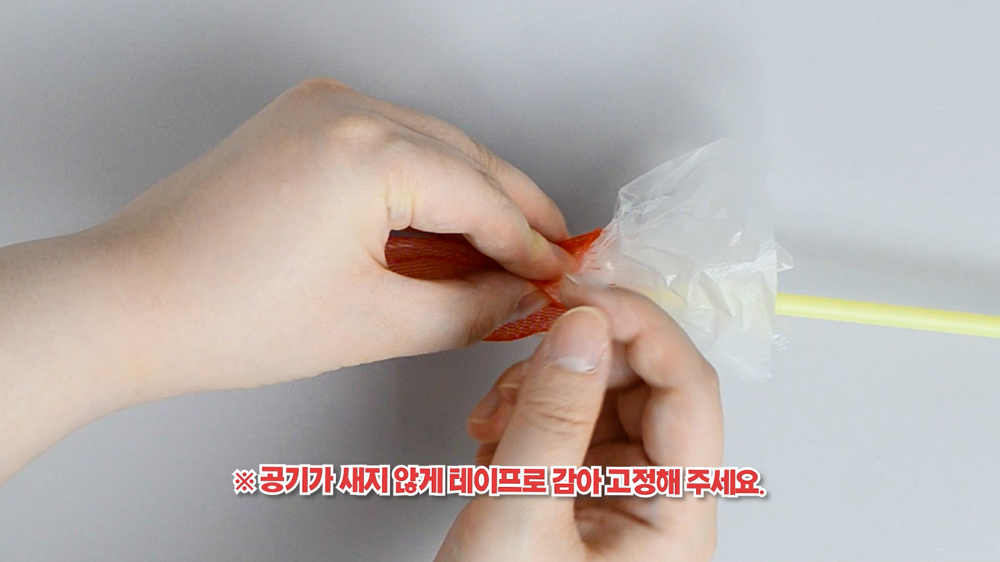
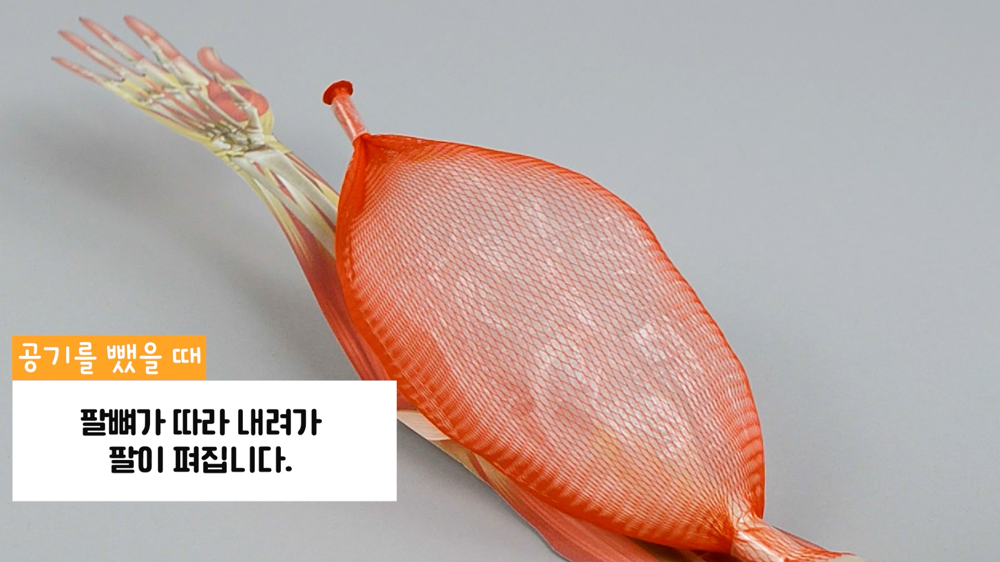
뼈와 근육의 구조 및 움직임을 시청자가 쉽게 이해할 수 있도록 시각적으로 표현하는 데 어려움이 있었습니다. 이를 해결하기 위해 모형의 작동 장면과 일러스트를 함께 활용하여 팔이 구부러지고 펴지는 과정을 단계적으로 보여주고자 했습니다. 특히 공기의 주입과 배출에 따른 모형의 움직임을 실제 뼈와 근육의 작용과 연결하여 설명하는 데 중점을 두었습니다. 이번 작업을 통해 복잡한 과학 원리를 전달할 때는 적절한 시각 자료와 체계적인 영상 구성이 중요하다는 점을 배웠습니다.
영상 콘텐츠 기획 · 촬영 · 편집
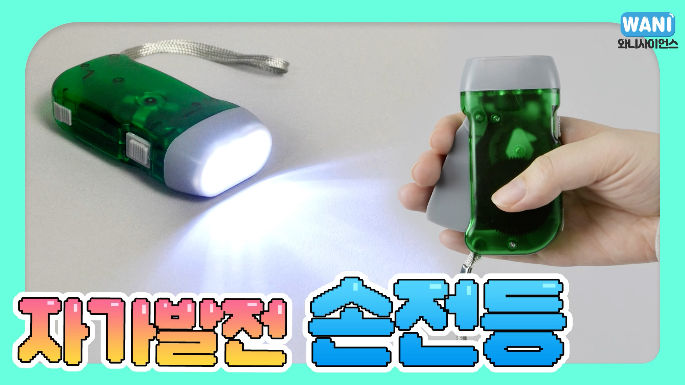
건전지 없이 간단한 손동작만으로 빛을 낼 수 있는 자가발전 손전등의 특징과 작동 원리를 소개하는 제품 교육 영상입니다. 손전등의 버튼과 사용 방법을 직접 시연하고, 어두운 환경에서 빛을 비추는 장면을 통해 제품의 편리함을 전달했습니다. 또한 레버를 반복적으로 움직이면 전자기 유도에 의해 전류가 발생하는 과학 원리를 함께 설명하여 제품의 기능과 학습 요소를 동시에 전달하고자 했습니다.
자가발전 손전등의 사용 방법과 건전지 없이 빛이 발생하는 원리를 제품의 외형만으로 이해하기 어려움
실제 사용 장면을 통해 제품의 편리함을 전달하고, 자가발전 방식의 과학 원리를 쉽게 이해하도록 유도
버튼 및 레버 조작 방법과 어두운 환경에서의 점등 장면을 직접 보여주고, 전자기 유도 원리를 간결하게 설명
과학 원리에 관심 있는 학생 및 교육자, 간편한 비상용 손전등에 관심 있는 사용자
건전지 없이 간단한 손동작으로 빛을 만드는 편리한 자가발전 손전등
실제 제품의 조작과 점등 장면을 중심으로 기능과 작동 원리를 직관적으로 전달하는 실용적인 제품 소개 영상
제품 특징 소개부터 버튼 및 레버 사용법, 실제 점등 시연, 전자기 유도 원리 설명으로 이어지는 간결한 영상 구성
제품의 형태와 조작 방법이 잘 드러나도록 시각적 요소를 단순화하고, 핵심 기능과 설명을 중심으로 정보 전달
레버를 반복적으로 조작하는 모습과 어두운 환경에서 손전등이 켜지는 장면을 직접 촬영하여 제품의 작동 방식과 활용성을 시각적으로 표현
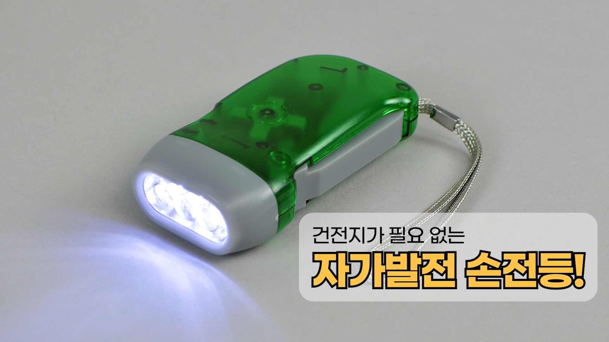
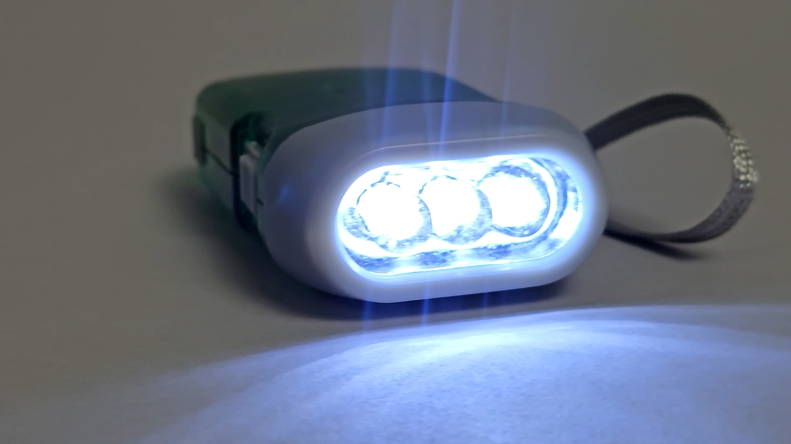
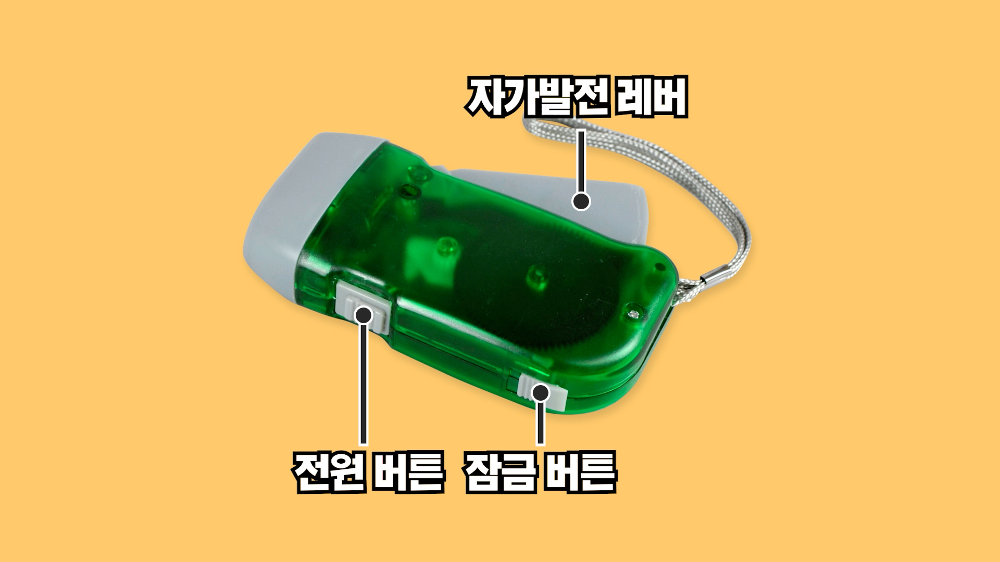
제품의 핵심 장점인 간편한 조작과 건전지 없는 사용 방식을 효과적으로 전달하기 위해 실제 사용 장면을 중심으로 영상을 구성했습니다. 특히 어두운 환경에서 손전등이 켜지는 모습을 직접 보여주어 제품의 기능을 직관적으로 확인할 수 있도록 했습니다. 이번 작업을 통해 제품 소개 영상에서는 복잡한 연출보다 핵심 기능을 명확하게 보여주는 구성이 효과적일 수 있다는 점을 배웠습니다.
자사몰 운영 안내 · 팝업 디자인
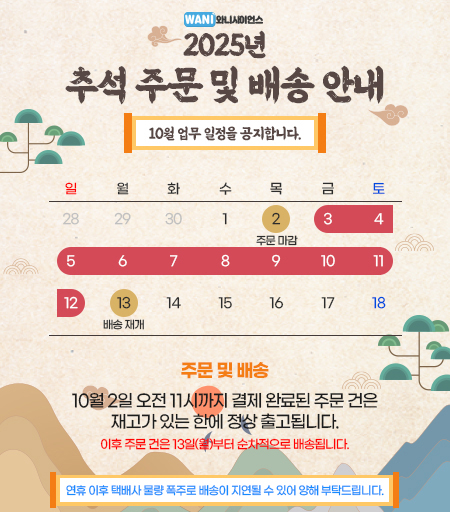
추석 연휴에 따른 주문 마감 및 배송 재개 일정을 안내하기 위해 제작한 자사몰 공지 팝업입니다. 고객이 주요 일정을 쉽게 확인할 수 있도록 달력과 배송 안내 문구를 중심으로 구성했습니다.
달력에 주문 마감일과 배송 재개일을 강조, 하단에 주문 및 배송 관련 안내 사항을 배치하여 정보의 우선순위를 구분
따뜻한 베이지 톤을 배경으로 전통적인 분위기를 표현, 레드 컬러를 활용하여 주요 일정과 안내 문구를 강조
전통 산수화와 구름을 연상시키는 그래픽 요소를 활용해 추석 분위기를 표현, 달력에 색상별 표시를 적용하여 일정을 직관적으로 전달
자사몰 운영 안내 · 팝업 디자인
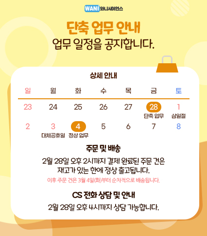
단축 업무 일정에 따른 주문 및 배송, 고객 상담 운영 시간의 변경 사항을 안내하기 위해 제작한 자사몰 공지 팝업입니다. 고객이 주요 일정을 쉽게 파악할 수 있도록 달력과 안내 문구를 중심으로 구성했습니다.
달력을 중심으로 단축 업무일과 대체공휴일을 강조, 하단에 주문·배송 및 고객 상담 안내를 구분하여 배치
밝은 옐로우와 오렌지 컬러를 활용해 경쾌하고 친근한 분위기를 연출, 중요한 날짜와 제목에 색상 대비를 주어 가독성을 높임
여러 장의 종이를 겹쳐 클립으로 고정한 듯한 그래픽을 활용하여 공지문 콘셉트를 표현, 주요 날짜를 원형으로 강조해 일정을 직관적으로 전달
자사몰 운영 안내 · 팝업 디자인
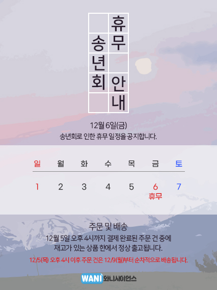
사내 송년회로 인한 휴무 일정과 주문 및 배송 변경 사항을 안내하기 위해 제작한 자사몰 공지 팝업입니다. 휴무 날짜와 배송 일정을 고객이 쉽게 확인할 수 있도록 달력과 안내 문구를 중심으로 구성했습니다.
세로형 타이포그래피를 활용해 제목에 시선을 집중, 달력과 주문·배송 안내를 순서대로 배치하여 주요 정보를 쉽게 확인할 수 있도록 구성
차분한 퍼플과 그레이 계열의 컬러를 활용하여 겨울 특유의 고요한 분위기를 표현, 제목은 격자형 타이포그래피로 구성해 시각적인 차별화
겨울 풍경 이미지를 일러스트 스타일로 가공하여 배경에 활용, 부드러운 색감과 그래픽 요소를 통해 차분하고 감성적인 분위기를 연출